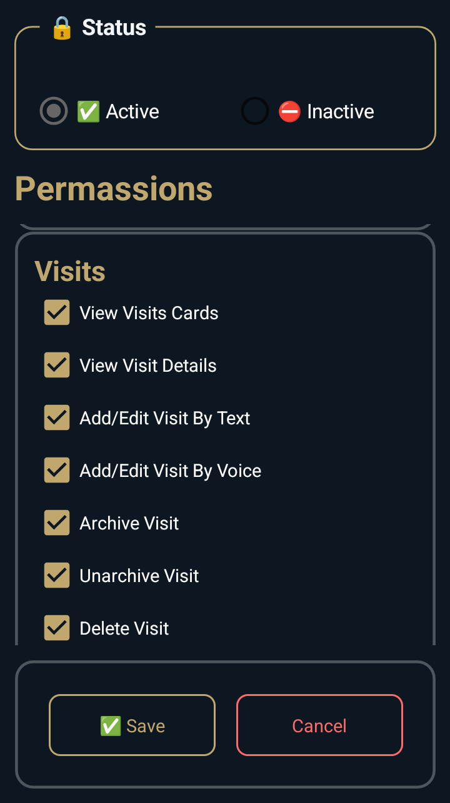

Product guides
Team permissions for clinical workflows
A clinic team may help with different parts of the working day. MedicalSpace presents separate permission groups so the account owner can review access for each member according to the work they need to perform.
Get it on Google Play Enlarge screenshot
Enlarge screenshotPatient-record permissions
Define the task before granting access
Start with the member’s responsibilities. The illustrated settings distinguish patient records, visits, clinical documentation and prescription-related tools. Patient-record actions include viewing, creating, editing and deleting. Review the specific action rather than relying only on a general role name.
Revisit access when responsibilities change
Other groups cover visit workflows, complaints, diagnoses, treatment plans, notes and prescriptions. Check the selected member and intended permissions before saving changes. Review access again when tasks change or a member no longer needs the same access. These settings help organize teamwork but do not replace professional supervision or clinic confidentiality procedures.
How to use it
- Identify the member and the work they need to perform.
- Review the relevant permission groups and each allowed action.
- Check the selections before saving, and revisit access when responsibilities change.
Inside the application
Original app captures. Patient records and the clinical chat are fictional examples; private contact details are excluded.
Enlarge screenshotPatient-record permissions


Enlarge screenshotVisit permissions
 Enlarge screenshot
Enlarge screenshotClinical-documentation permissions
 Enlarge screenshot
Enlarge screenshotPrescription and clinical-tool permissions
Questions about this feature
Is access controlled only by a role name?
The demonstrated interface shows more detailed permission groups and actions for individual workflows.
Which areas are illustrated?
Patient records, visits, clinical documentation, prescriptions and associated clinical tools.
Do the screenshots show the member’s phone number?
No. The private contact header was excluded from the published captures. Hassan Mohamed is the member display name in this example.